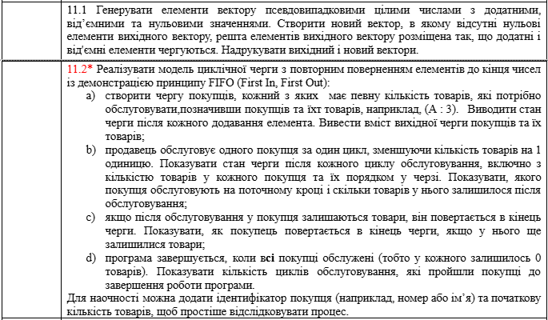
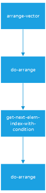
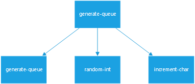
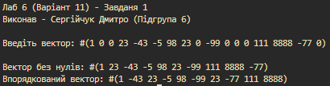
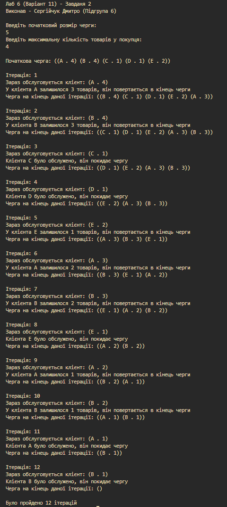

Мета
Опанувати теоретичні основи обробки структур типу векторів і матриць, стеків та черг мовами функціонального програмування та розробити програми їх реалізації
Умова
Аналіз
Завдання 1
Для забезпечення чергування елементів, було реалізовано функцію, яка приймає вектор та функцію, яка перевіряє, чи перевіряє даний елемент умові. Також ще одним аргументом є індекс попереднього елемента, що відповідає умові. Таким чином ми можемо по черзі виконувати пошук наступного числа, більшого за нуль, а потім - меншого за нуль
Завдання 2
Для роботи з чергами можна використовувати пакет data/queue. Він вже має багато зручних методів для роботи з чергами, проте для даного завдання, ще можна додати отримання останнього елемента черги. Це можна реалізувати перетворивши чергу в список, обернути його та взяти перший елемента через функцію car
HIPO Діаграма
Завдання 1
Завдання 2
Код
Code: Task1
#lang racket
(displayln "Лаб 6 (Варіант 11) - Завданя 1")
(displayln "Виконав - Сергійчук Дмитро (Підгрупа 6)")
(newline)
; Перевіряє, чи вектор складається лише з чисел
(define (number-vector? vec [index 0])
(if (< index (vector-length vec))
(if (number? (vector-ref vec index))
(number-vector? vec (+ index 1))
#f)
#t))
; Читає вектор з консолі, перевіряючи вхідні дані на коректність
(define (read-vector)
(printf "Введіть вектор: ")
(define vec (read))
(cond
[(and (vector? vec) (number-vector? vec)) vec]
[else
(printf "Некоректні вхідні дані\n")
(read-vector)]))
; Прибирає елементи з вектора, які є нулями
(define (remove-zeros vec)
; Ітерує вектор та виконує фільтрацію
; - filtered-vector : акумулятор-вектор без нульових елементів
; - index : індекс поточної ітерації
(define (iterate [filtered-vector #()] [index 0])
(cond
[(< index (vector-length vec))
(define elem (vector-ref vec index))
(define next-vec (if (zero? elem)
filtered-vector
(vector-append filtered-vector (vector elem))))
(iterate next-vec (+ index 1))]
[else filtered-vector]))
(iterate))
; Повертає індекс наступного елемента, який відповідає умові:
; - vec : вхідний вектор
; - prev-index : індекс попереднього елемента, який відповідає умові
; - condition? : функція, яка перевіряє відповідність елемента умові
; Повертає індекс елемента або #false якщо досягнуто кінець вектора
(define (get-next-elem-index-with-condition vec prev-index condition?)
(define (iterate [index (+ prev-index 1)])
(cond
[(< index (vector-length vec))
(if (condition? (vector-ref vec index))
index
(iterate (+ index 1)))]
[else #f]))
(iterate))
; Впорядковує вектор таким чином, щоб знак елементів чергувався (плюс - мінус)
(define (arrange-vector vec)
; Ітерує вектор та впорядкою його
; - arranged-vector : акумулятор, що репрезентує впорядкований вектор
; - prev-signed-index : індекс попереднього елемента, який < 0
; - prev-unsigned-index : індекс попереднього елемента, який >= 0
; - sign : знак числа, на даній ітерації
(define (do-arrange [arranged-vector #()] [prev-signed-index -1] [prev-unsigned-index -1] [sign #f])
(cond
[(or prev-signed-index prev-unsigned-index)
(cond
[sign
(define next-signed-index (get-next-elem-index-with-condition vec prev-signed-index (lambda (elem) (< elem 0))))
(define next-vec (if next-signed-index
(vector-append arranged-vector (vector (vector-ref vec next-signed-index)))
arranged-vector))
(do-arrange
next-vec
next-signed-index
prev-unsigned-index
(if prev-unsigned-index #f #t))]
[else
(define next-unsigned-index (get-next-elem-index-with-condition vec prev-unsigned-index (lambda (elem) (>= elem 0))))
(define next-vec (if next-unsigned-index
(vector-append arranged-vector (vector (vector-ref vec next-unsigned-index)))
arranged-vector))
(do-arrange
next-vec
prev-signed-index
next-unsigned-index
(if prev-signed-index #t #f))])]
[else arranged-vector]))
(do-arrange))
(define my-vector (read-vector))
(newline)
(define vector-without-zeros (remove-zeros my-vector))
(printf "Вектор без нулів: ~a\n" vector-without-zeros)
(define arranged-vector (arrange-vector vector-without-zeros))
(printf "Впорядкований вектор: ~a\n" arranged-vector)
Code: Task 2
#lang racket
(require data/queue)
(displayln "Лаб 6 (Варіант 11) - Завданя 2")
(displayln "Виконав - Сергійчук Дмитро (Підгрупа 6)")
(newline)
; Читає з консолі не дробове число, що більше 0
(define (read-exact-number)
(define num (read))
(cond
[(and (number? num) (> num 0) (exact? num)) num]
[else (printf "Введено некоректні дані\n") (read-exact-number)]))
; Повертає випадкове ціле число від 1 до max включно
(define (random-int max)
(inexact->exact (+ 1 (floor (* (random) max)))))
; Збільшеє значення символа на 1
(define (increment-char char)
(integer->char (+ 1 (char->integer char))))
; Заповнює чергу покупцями, які мають такий вигляд: (Ідентифікатор . К-сть товарів)
; - size: кількість елементів, які необхідно додати
; - max-number-of-products: максимальна кількість товарів у клієнта
; - name: ідентифікатор поточного покупця
; - index: індекс поточної ітерації
(define (generate-queue size max-number-of-products [name #\A] [index 0])
(when (< index size)
(enqueue! queue (cons name (random-int max-number-of-products)))
(define next-name (increment-char name))
(generate-queue size max-number-of-products next-name (+ index 1))))
; Виводить чергу в консоль
(define (print-queue q)
(displayln (queue->list q)))
; Моделює чергу в магазині
; - q: черга покупців
; - iter: поточна ітерація
(define (model q [iter 0])
(cond
[(not (queue-empty? q))
(printf "Ітерація: ~a\n" (+ 1 iter))
(define client (dequeue! q))
(printf "Зараз обслуговується клієнт: ~a\n" client)
(define served-client (cons (car client) (- (cdr client) 1)))
(cond
[(zero? (cdr served-client))
(printf "Клієнта ~a було обслужено, він покидає чергу\n" (car served-client))]
[else
(printf "У клієнта ~a залишилося ~a товарів, він повертається в кінець черги\n" (car served-client) (cdr served-client))
(enqueue! q served-client)])
(printf "Черга на кінець даної ітерації: ")
(print-queue q)
(newline)
(model q (+ iter 1))]
[else iter]))
(define queue (make-queue))
(displayln "Введіть початковий розмір черги:")
(define queue-size (read-exact-number))
(displayln "Введіть максимальну кількість товарів у покупця:")
(define max-number-of-products (read-exact-number))
(newline)
(generate-queue queue-size max-number-of-products)
(printf "Початкова черга: ")
(print-queue queue)
(newline)
(define iterations (model queue))
(printf "Було пройдено ~a ітерацій" iterations)
Результати
Завдання 1
Завдання 2
Перевірка
Завдання не потребують перевірки
Перевірка коду ШІ
Завдання 1
Введний запит: "чи відповідає даний код на мові програмування racket критеріям простоти та clean code? (код завдання №1)"
Відповідь Chat GPT:
Код виглядає акуратно й добре структуровано, але якщо оцінювати його з точки зору принципів простоти та clean code, то є як позитивні сторони, так і моменти, які можна покращити. Розберімо детально 👇
✅ Позитивні сторони
-
Чіткі коментарі
Кожна функція має зрозумілий опис: призначення, параметри, очікуваний результат. Це чудово для читабельності, особливо в Racket, де структура рекурсій може бути заплутаною.
-
Хороше розділення обов’язків
Кожна функція робить щось одне:
- number-vector? — перевіряє тип даних
- read-vector — читає і валідує введення
- remove-zeros — очищує вектор
- arrange-vector — чергує знаки
Це відповідає Single Responsibility Principle
- Функціональний підхід з рекурсією реалізовано грамотно — без зайвих побічних ефектів, немає глобальних змінних
- Використання локальних допоміжних функцій (iterate, do-arrange) — гарна практика для ізоляції логіки та збереження чистоти коду
⚠️ Моменти, які можна покращити
-
Зайва складність у arrange-vector
Функція дуже важка для сприйняття:
- вона одночасно веде три індекси (prev-signed-index, prev-unsigned-index, sign)
- має вкладену рекурсію та логіку з багатьма умовами
🟢 Порада:
Розбий функцію на дрібніші:
- окрема функція find-next-positive
- окрема find-next-negative
- і головна, яка просто чергує їх.
Це зменшить когнітивне навантаження й дозволить уникнути дублювання коду.
-
Надлишковість у number-vector?
Тут можна використати вбудовані засоби, щоб зробити код коротшим і чистішим:
Code(define (number-vector? vec) (and (vector? vec) (for/and ([x (in-vector vec)]) (number? x))))— без явної рекурсії, з тією ж логікою.
-
remove-zeros можна спростити:
Твоя версія рекурсивна, але це можна зробити декларативно:
Code(define (remove-zeros vec) (vector-filter (λ (x) (not (zero? x))) vec))Це значно коротше, легше читається і працює так само.
-
read-vector має побічний ефект (рекурсивне самовикликання)
Це не критично, але якщо говорити про "clean code", то краще відділяти читання від перевірки даних:
Code(define (read-vector) (let loop () (printf "Введіть вектор: ") (define vec (read)) (if (and (vector? vec) (number-vector? vec)) vec (begin (printf "Некоректні вхідні дані\n") (loop)))))Так код читається плавніше (і без повторного виклику самої функції по імені).
-
Назви змінних і функцій
Назви в цілому гарні, але arranged-vector і do-arrange трохи розмиті.
Можна чіткіше:
- arrange-alternating-signs
- build-alternating-vector
Це зробить намір функції очевидним навіть без читання коментарів.
Завдання 2
Введний запит: "чи відповідає даний код на мові програмування racket критеріям простоти та clean code? (код завдання №2)"
Відповідь Chat GPT:
✅ Що зроблено добре
-
Чітка структура програми
- Код логічно поділений на функції, кожна з яких виконує одну зрозумілу задачу.
- Імена функцій зрозумілі: read-exact-number, generate-queue, model, print-queue — все інтуїтивно.
-
Коментарі якісні
- Короткі й чітко пояснюють призначення функції та параметри
- Використано формат, подібний до docstring у Python — це гарно
-
Валідація введення
- Функція read-exact-number має перевірку на тип, знак і цілісність — це демонструє увагу до надійності
-
Чистий функціональний стиль
- Рекурсія використана природно для Racket (generate-queue, model).
- Використовуються імунні структури даних та прості операції без зайвих побічних ефектів (окрім enqueue/dequeue, що є необхідним)
-
Добре відокремлені обов’язки
- Є функції для вводу, генерації, виводу та моделювання
- Основна логіка не перемішана з побічними діями (наприклад, друком)
⚠️ Що можна покращити
-
Неочевидна глобальна змінна queue
Code(define queue (make-queue))→ Цю змінну краще передавати як параметр до generate-queue, щоб уникати глобального стану.
Чому: глобальні змінні зменшують модульність і повторне використання коду.
✅ Кращий варіант:
Code(define (generate-queue size max-number-of-products [name #\A] [index 0] [q (make-queue)]) (when (< index size) (enqueue! q (cons name (random-int max-number-of-products))) (generate-queue size max-number-of-products (increment-integer name) (+ index 1) q)) q)Тоді виклик:
Code(define queue (generate-queue queue-size max-number-of-products)) -
Надлишкове дублювання логіки у model
Блок:
Code(printf "Ітерація: ~a\n" (+ 1 iter)) ... (printf "Черга на кінець даної ітерації: ") (print-queue q) (newline)можна винести у допоміжну функцію, щоб model стала компактнішою.
-
Можна спростити умову у read-exact-number
Зараз вона трохи громіздка:
Code(and (number? num) (> num 0) (exact? num))✅ Можна зробити більш читабельно:
Code(define (positive-exact-integer? n) (and (exact? n) (integer? n) (> n 0)))і потім:
Code(when (not (positive-exact-integer? num)) ...) -
Можна уникнути рекурсії для моделювання
Функція model рекурсивна, але це можна реалізувати через цикл (for чи let loop), що спростить розуміння логіки та зменшить навантаження на стек:
Code(let loop ([q queue] [iter 0]) (unless (queue-empty? q) ... (loop q (+ iter 1))))Хоча для Racket рекурсія — норма, у цьому випадку цикл виглядав би природніше
Висновок
В даній роботі було продемонстровано роботу з векторами та чергами в racket. В першому завданні, яке вимагає роботу з векторами, максимально уникалося використання списків, надаючи перевагу функціям роботи з векторами. Для другого завдання використовувалися черги з пакету data/queue